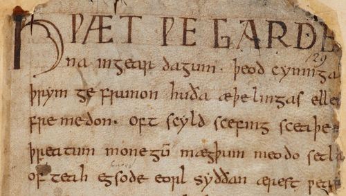

The Greatest Work of Old English Literature, The Epic of Beowulf
Origins
The heroic story of Beowulf stands as a corner stone of Anglo-Saxon literature. The poem is exactly 3,182 lines of alliteration which was a very common feature of Old English poetry. The exact date of composition is widely debated, but it is suspected to have been written around the year 1000AD. Within the poem we find conflicting Christian and Pagan elements which interestingly relates to the orgins and formation of England. Here's what happened:
- Modern day England was occupied by Rome
- Rome was attacked, so Roman soldiers left England to help defend their homeland. This left England without any order or infrastructure which made them vulnerable. Hengst and Horsa, two German brothers, took advantage of their vulnerability and led the Angles and Saxons to Englaland meaning "the land of the Angles".
- With time, England began to convert to Christianity, but it is highly likely that some Pagan Germanic beliefs still lingered amongst the people.
Summary
Beowulf, an epic poem rooted in Anglo-Saxon literature, unfolds the heroic saga of its eponymous protagonist, Beowulf, a warrior of the Geats, who confronts three formidable foes: Grendel, a monstrous creature terrorizing the Danes; Grendel's vengeful mother; and, in his later years, a devastating dragon. The narrative, set against the backdrop of Scandinavia, is not just a tale of battles and bravery but also a profound exploration of themes such as heroism, the transient nature of glory, and the quest for eternal renown. Beowulf's feats against these adversaries are celebrated as the pinnacle of personal valor and selflessness, demonstrating the poem's underlying messages about the importance of loyalty, the inevitability of death, and the enduring legacy of one's deeds. Through its depiction of Beowulf's unwavering courage in the face of inevitable mortality, the epic serves as a timeless reflection on the human condition, emphasizing the value of achieving honor and respect, which, unlike earthly possessions, survive the hero's mortal demise.